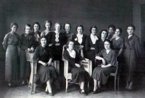

"E ao lado dela, se formaram 32 colegas homens. Até então, em todo o território nacional, somente quatro
mulheres já tinham se graduado em engenharia. E todas
elas pela Escola Politécnica da Universidade Federal do Rio de Janeiro."
História de Enedina Alves Marques
A história de Enedina Alves Marques se torna ainda mais interessante quando sabemos de suas origens. Afinal,
sua mãe trabalhava como empregada doméstica na casa da família do major e delegado Domingos Nascimento
Sobrinho.
A filha de Domingos, Isabel, tinha a mesma idade de Enedina. Por isso, o delegado, que também era
intelectual, matriculou a filha da empregada nas mesmas escolas que sua filha.
Ainda que tivesse esse apoio, conquistar o diploma de engenheira civil não foi algo simples para a jovem
Enedina Alves Marques, que também trabalhava como babá.
Assim que concluiu a escola normal secundária, como era chamado o Ensino Médio na época, Enedina Alves
Marques passou a lecionar em cidades do interior do Estado do Paraná. Esses fatos se passaram entre os anos
de 1932 e 1935.Assim, como professora, Enedina Alves Marques trabalhou em diversos grupos escolares do
Estado, sem nunca deixar de sonhar com o ingresso na universidade.

Carreira em Órgãos Públicos
De acordo com pesquisadores, Enedina teve que lidar com muitos preconceitos ao longo desse período e este
preconceito vinha inclusive da parte de muitos professores e colegas de curso.
Um ano depois de formada, em 1946, Enedina Alves Marques atuou como auxiliar de engenharia na Secretaria de
Viação e Obras Públicas.
Além disso, foi chefe de hidráulica, chefe da divisão de estatísticas do serviço de
engenharia do Paraná, na Secretaria de Educação e Cultura do Estado.
Em 1947, no auge da sua carreira, Enedina Alves Marques iniciou em um novo local de trabalho, dessa vez, no
Departamento Estadual de Águas e Energia Elétrica do Paraná. No entanto, ela atuou no levantamento
topográfico e na construção da Usina Capivari-Cachoeira (Usina Parigot de Souza), colaborou na construção de
pontes e no levantamento de rios. Assim sendo, trabalhou melhorando o aproveitamento
hídrico das águas dos rios Capivari, Cachoeira e Iguaçu e executou o Plano Hidrelétrico do Paraná.
Competente e comprometida com o trabalho, Enedina chefiou muitos outros técnicos e engenheiros ao longo de
sua carreira na área de engenharia.
O reconhecimento profissional ficou mais evidente a partir de 1961, quando o sociólogo Octávio Ianni
entrevistou Enedina Alves Marques e como parte de sua pesquisa que se transformou no livro “Metamorfoses do
escravo”. Em 1962, aposentou-se pelo governo do estado e recebeu o reconhecimento do governador Ney Braga,
que por decreto admitou os feitos de Enedina enquanto engenheira e lhe garante proventos equivalentes ao
salário de um juiz.
Vida Pessoal e Reconhecimentos
Estabelecida no governo e com carreira estruturada, entre os anos 1950 e 1960, Enedina dedicou-se a conhecer
o mundo e outras culturas viajando. Nesse mesmo período em 1958, o major Domingos Nascimento Sobrinho
faleceu, deixando-a como uma de suas beneficiárias no seu testamento. Enedina não se casou e não teve
filhos. Ao final de sua vida morava no Edifício Lido, no Centro de Curitiba onde foi encontrada morta aos 68
anos, vítima de ataque cardíaco. Por não ter família imediata, seu corpo demorou a ser encontrado.
Hoje, Enedina Alves Marques tem seu nome no Livro do Mérito do Sistema Confea/Crea.
Além disso, no ano de 1988, uma rua de sua cidade natal, no bairro Cajuru, a 7 km do centro de Curitiba,
também veio a receber o seu nome. Mais tarde, no ano de 2000, a engenheira foi reconhecida pelo Memorial à
Mulher. Assim, passou a figurar junto a outras 53 mulheres pioneiras do Brasil em diversas áreas do
conhecimento.
Por fim, em 2006, foi fundado o Instituto de Mulheres Negras Enedina Alves Marques, em Maringá, no interior
do Estado do Paraná.
Enedina abriu as portas para uma maior participação da mulher no mercado de trabalho, em especial na
engenharia. Embora não tenha publicamente demonstrado interesse ou participação em nenhuma vertente de
movimento em prol
da igualdade racial, Enedina é um exemplo de mulher, negra, que alcançou seus objetivos e mostrou que
poderia estar onde quis estar.